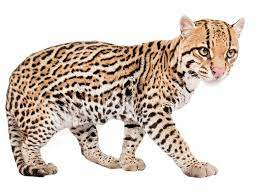
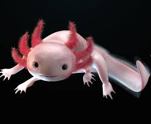

Un animal en peligro de extincion es una especie que solo podra sobrevivir por un corto periodo de tiempo a menos que se tomen acciones y precauciones para salvarlo. Los animales en extincion o que ya se extinguieron fueron causa de la accion humana mayormente ya que nosotros al contaminar el planeta alteramos el clima cosa que causa un desequilibrio climatico que pone en riesgo la adaptacion y el habitad de los animales.
Algunos de estos animales son:
La guacamaya roja se distingue por el color rojo escarlata de su plumaje(en combinación con el tono amarillo de sus plumas cobertoras y secundarias de las alas, el verde y el azul de sus plumas cobertoras de la cola) y por la ausencia de las mismas en el rostro. Es una ave preciosa, que lamentablemente esta en peligro de extincion mayormente por diferentes factores humanos.

La vaquita marina o cochito es una especie de cetáceo odontoceto de la familia Phocoenidae, una de las siete especies de marsopa.Mide 150 cm de largo y pesa hasta 50 kg. Tiene una distribución muy restringida.También es considerada una especie endémica de México en Baja California. Este animal se encuentra en peligro de extincion debido a que quedan atrapados de forma incidental en las redes de enmalle, conocidas como chinchorros, que se utilizan para la captura de camarón y en la pesca ilegal de totoaba

El ocelote es un felino de América con un aspecto similar al jaguar pero de menores dimensiones. Constituye uno de los principales depredadores en su hábitat, y se extiende desde el sur de Estados Unidos hasta las regiones más meridionales de Brasil y Paraguay. Sin embargo, a pesar de que su hábitat cubre una región tan amplia, en la actualidad está catalogado como especie en peligro de extinción. De hecho, según las zonas a las que nos refiramos, el estado del ocelote puede pasar de ser una preocupación menor a situarse en un estado de amenaza grave.
El axolotl o ajolote es un tipo de anfibio endémico de México. Puede recordarnos a una salamandra, pero sus branquias o cuernos los diferencian totalmente. Se trata de un curioso anfibio que en los últimos años ha ganado mucha más popularidad en todo el mundo, e incluso hay personas que lo buscan como mascota. Esto y otros aspectos lo han llevado a un serio problema: el ajolote esta considerado por la IUCN como un animal en situación de "Critically endangered", es decir en grave peligro de extinción.
